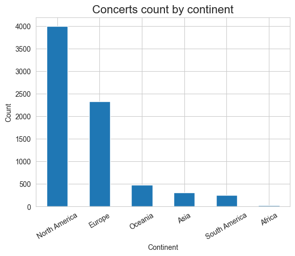
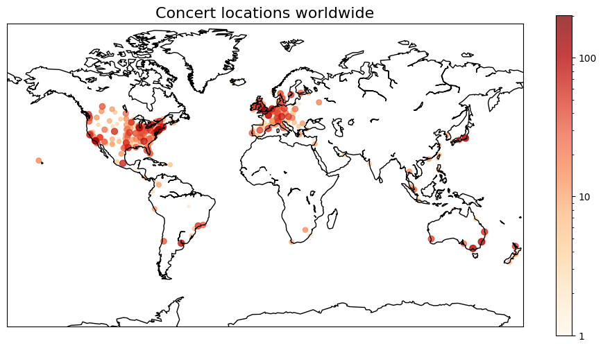
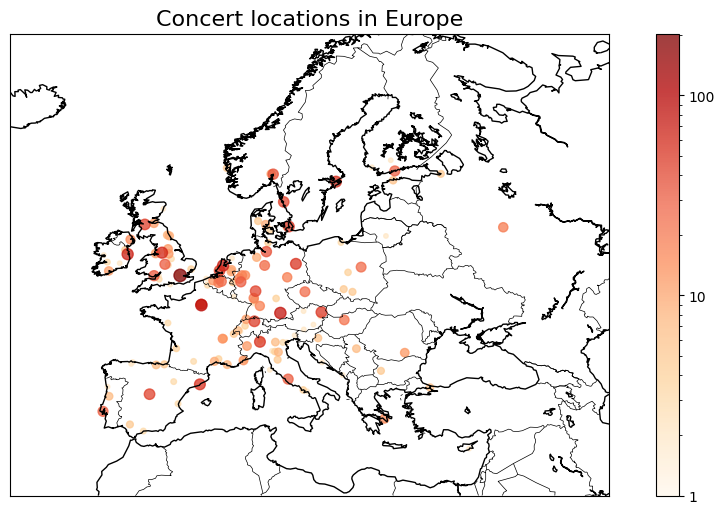
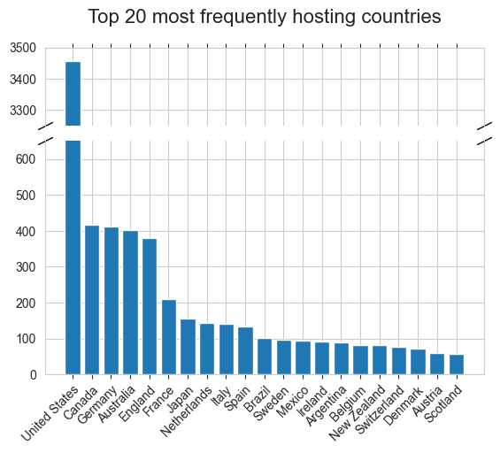

What does 'World' in the 'World tour' phrase really mean?
Written on
Scrolling the Internet you can often see complaining (that became a meme at this point) about world tours that skip a lot of countries and entire continents. It intuitively feels like truth, but I wanted to gather data and find proof of it.
To achieve this, I gathered data regarding the biggest music world tours in history and I analysed the locations of all concerts.
Data source
I've used Wikipedia as my data source. I decided to analyse tours that I found in a few tables coming from two articles:
If you want to see how I scraped and transformed data, you should check out this notebook from my repo.
Some tours from those lists are still going on. Therefore I have to say that data was scraped on 22 Nov 2023.
Warning
Both those Wikipedia articles are updated very often. I also removed some tours from my dataset, because I couldn't find proof that it was intended to be a world tour. The full list of tours examined during analysis is in my repo.
Initial analysis
After transforming and cleaning my dataset I gathered the first information. First of all, I found out that I have 7397 concerts coming from 50 concert tours. These were performed on all (populated) continents, in 607 unique cities across 79 countries. At this point, we can already see, that much more than 100 countries never hosted any concert from those biggest tours.
After checking the value counts of concert locations by continent I came to my first conclusion: - More than half of the concerts took part in North America. - Very small fractions of those events took part in Africa. There are only 31 of them, making 0.42% of the dataset. - Australia and Oceania hosted a lot of examined concerts, regarding the population of this continent.

Map visualization
They say that a picture is worth a thousand words, so I think the most important thing is to plot the locations of concerts on a map. The bigger size and darker colour of the markers mean that more concerts were held in that place.

In a few countries (I'd say the USA, Canada, Australia) it looks like a population density map. It's not the case for the rest of the world. Globally we can already see that South America, Africa and Asia held very of world tour events. You can see also some disproportions in Europe. Concerts there concentrate in the UK, Germany, France, Northern Italy and Benelux countries. Southern and Eastern Europe and even Spain and Portugal seem to be hosts of world tour concerts much less often.

Further analysis
Those map visualizations are actually enough to learn what 'world' means in the 'world tour' phrase. But if you're interested more, then there is more deep-dive analysis.
Concerts by country
Then I plotted 20 countries that most frequently hosted concerts from my dataset. The only one, but kinda big, surprise was how disproportional is number of concerts that were located in the United States than in any other country.
We can also see, that 4 out of 5 top countries are (mostly) English speaking. It may be an important factor, considering that most famous artists usually sing in English.

The next step was examining countries on individual continents. I decided to not plot this, because data distributions are very skewed, so plots aren't readable well.
First, looking at Oceania we can see that there are only Australia and New Zealand. It's not very surprising, considering that other countries there are located on small islands with small populations. Still, count of concerts in those two countries is very high regarding their population.
| Country | Count |
|---|---|
| Australia | 401 |
| New Zealand | 81 |
In Africa, we can see, that almost all concerts took place in the South Africa Republic. Individual events were held in Tunisia and Morocco
| Country | Count |
|---|---|
| South Africa | 29 |
| Morocco | 1 |
| Tunisia | 1 |
South America seems to be probably the least surprising continent. I would personally expect more world tour concerts held in Uruguay. It's a small country, but according to this data it has also the biggest GDP per capita on this continent.
| Country | Count |
|---|---|
| Brazil | 103 |
| Argentina | 89 |
| Chile | 35 |
| Colombia | 14 |
| Peru | 11 |
| Ecuador | 3 |
| Uruguay | 2 |
| Paraguay | 1 |
In North America, there is a big disproportion between the United States and other countries, but we already know this. Canada seems to be a similar case to Australia and New Zealand - English English-speaking country with a very good economy.
| Country | Count |
|---|---|
| United States | 3456 |
| Canada | 417 |
| Mexico | 95 |
| Costa Rica | 8 |
| Puerto Rico | 6 |
| Dominican Republic | 3 |
| Guatemala | 2 |
| Panama | 1 |
| El Salvador | 1 |
| Honduras | 1 |
In Asia, we have another very skewed distribution. The majority of concerts are held in Japan. The surprisingly large count is for Singapur - another English-speaking, wealthy country. I would also assume that South Korea gets much more events than it actually has.
| Country | Count | Country | Count |
|---|---|---|---|
| Japan | 156 | Israel | 9 |
| Singapore | 36 | Indonesia | 7 |
| Taiwan | 16 | United Arab Emirates | 7 |
| Thailand | 15 | China | 7 |
| Philippines | 12 | India | 6 |
| Malaysia | 11 | Macau | 4 |
| Hong Kong | 11 | Bahrain | 1 |
| South Korea | 10 | Brunei | 1 |
In the Europe we have the most unique countries, that were hosting world tour shows. However, almost half of them hosted not more than 10 such events. Countries with the biggest count of concerts are localised in western and central part of Europe. Eastern and southern Europe gets much less of those.
| Country | Count | Country | Count | Country | Count | Country | Count |
|---|---|---|---|---|---|---|---|
| Germany | 411 | Denmark | 71 | Hungary | 22 | Luxembourg | 3 |
| England | 381 | Austria | 60 | Greece | 16 | Monaco | 3 |
| France | 209 | Scotland | 57 | Northern Ireland | 15 | Montenegro | 2 |
| Netherlands | 144 | Norway | 51 | Romania | 12 | Lithuania | 2 |
| Italy | 142 | Poland | 43 | Croatia | 8 | Cyprus | 2 |
| Spain | 135 | Portugal | 38 | Estonia | 7 | Bosnia and Herzegovina | 1 |
| Sweden | 96 | Finland | 35 | Serbia | 7 | Latvia | 1 |
| Ireland | 92 | Wales | 33 | Turkey | 6 | Slovenia | 1 |
| Belgium | 83 | Czech Republic | 27 | Bulgaria | 5 | Malta | 1 |
| Switzerland | 77 | Russia | 24 | Iceland | 3 | Slovakia | 1 |
World tours distribution
According to data, only 5 out of 50 examined tours had events hosted on all continents. 14 out of 50 were hosted on not more than 3 continents, with so-called 'The Garth Brooks World Tour (2014–2017)' with the world being US and Canada.
Ed Sheeran during his ÷ Tour visited 49 countries. It's the biggest number of visited countries during one tour in my dataset. Needless to say, it was one of the all-continent tours.
Final conclusions
The popular meme is true. It really seems that in the dictionary of world-famous artists world means mostly the US, Canada, Western Europe and sometimes Australia and Japan. It doesn't surprise me, but is good to have evidence for that.
What's more surprising is how big is the difference between the United States and any other country. Among the most interesting things I found out here, is also the large count of concerts held in Australia, Canada and New Zealand in comparison to the population of those places.
It also seems to be a universal key for the most common countries - they tend to be very wealthy (rather obvious) and English-speaking (now it also seems obvious, but it wasn't like this before) countries. We need to keep in mind that almost all of those artists sing in English and come from the UK or the USA.